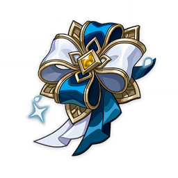

Genshin Impact · Versión 7.2
Análisis del Rol y Escalado
Sandrone (Marionette) es un personaje de elemento Cryo originario de Snezhnaya que utiliza Mandoble y se posiciona en el tier T0 (SS) Main DPS dentro del rol de Hypercarry Cryo de Conducto Estelar (Ataques Cargados + Autómata). Su rendimiento en combate gira en torno a este eje principal: Escala con ATQ (pasiva A4 convierte ATQ en ME hasta 2,000 ATQ).
Para maximizar su aporte en el equipo, la configuración prioritaria combina Llave de la Trascendencia con el conjunto de artefactos Disenchantment in Deep Shadows (4 piezas), respetando la jerarquía de estadísticas Recarga (125–145%) > Daño Crítico > Prob. Crítica > ATQ% (hasta 2,000+) > Maestría Elemental. y subiendo sus habilidades en orden: Ataques Normales (Cargados) > Definitiva (Q) > Habilidad Elemental (E).
Mejores Armas
Opciones recomendadas ordenadas por rendimiento según el meta actual y compatibilidad con sus rotaciones:
-
 Llave de la Trascendencia ★★★★★BiS Firma674 ATQ base, 44.1% Daño Crítico; +28% ATQ y hasta +48% Daño de Conducto y Torbellino Estelar con Cargados.
Llave de la Trascendencia ★★★★★BiS Firma674 ATQ base, 44.1% Daño Crítico; +28% ATQ y hasta +48% Daño de Conducto y Torbellino Estelar con Cargados. -
 Mil Soles Abrasadores ★★★★★Alternativa 5★741 ATQ base, 11% Prob. Crítica; +28% Daño Crítico y +20% ATQ tras Skill o Burst.
Mil Soles Abrasadores ★★★★★Alternativa 5★741 ATQ base, 11% Prob. Crítica; +28% Daño Crítico y +20% ATQ tras Skill o Burst. -
 Sentenciadora ★★★★★Alternativa 5★674 ATQ base, 22.1% Prob. Crítica y +20% ATQ pasivo.
Sentenciadora ★★★★★Alternativa 5★674 ATQ base, 22.1% Prob. Crítica y +20% ATQ pasivo. -
 Sombra de la Marea ★★★★Mejor 4★ Forja41.3% ATQ% y +24–48% ATQ adicional tras recibir curación.
Sombra de la Marea ★★★★Mejor 4★ Forja41.3% ATQ% y +24–48% ATQ adicional tras recibir curación.
Mejores Sets de Artefactos
Combinaciones de 4 piezas o mezclas de 2 piezas para maximizar su contribución:
-

Disenchantment in Deep Shadows (4 piezas) BiS Absoluto+18% ATQ; +40% Daño de Conducto Estelar y +16% Prob. Crítica al golpear afectados.
-
 Gilded Dreams (4 piezas) Alternativa
Gilded Dreams (4 piezas) Alternativa+80 ME y hasta +150 ME / +42% ATQ según composición elemental.
Estadísticas Principales y Secundarias
Atributos prioritarios en artefactos para un balance óptimo de daño o soporte:
| Pieza | Estadística Principal |
|---|---|
| Reloj (Arenas) | ATQ% / Maestría Elemental |
| Cáliz | ATQ% / Maestría Elemental |
| Corona | Daño Crítico ≥ Prob. Crítica |
Prioridad de Subestadísticas
- Recarga (125–145%) > Daño Crítico > Prob. Crítica > ATQ% (hasta 2,000+) > Maestría Elemental.
Prioridad de Talentos
Ataques Normales (Cargados) > Definitiva (Q) > Habilidad Elemental (E)
Objetivos de Estadísticas (Nivel 90)
Valores de referencia verificados para evaluar el equipamiento de Sandrone (Marionette) en nivel 90 con artefactos de 5 estrellas:
| Atributo | Meta Recomendada |
|---|---|
| Vida | 18,000 |
| Ataque | 2,000+ ATQ |
| Defensa | 800 |
| Maestría Elemental | 150 – 200 ME |
| Recarga de Energía | 125% – 145% ER |
| Balance Crítico | 30–40% base (sin set/asc.) / 180%+ CD |
Talentos de Combate y Materiales (Nivel 1 al 10)
Habilidades principales de Sandrone (Marionette) y desglose exacto de libros, materiales y Mora para mejorar sus talentos:


Composiciones de Equipo Recomendadas
Alineaciones con mayor sinergia elemental y amplificación de daño en el Abismo y Teatro Fantasía:
Conducto Estelar Premium
Sandrone • Yae Miko • Odette • Alyosha
Techo de daño actual de Snezhnaya con Yae Miko C1+, Odette y Alyosha.
Conducto Estelar Accesible
Sandrone • Beidou • Sucrose • Qiqi
Variante F2P haciendo doble cambio con Sacarosa para mantener buffs.
Materiales de Ascensión (Nivel 1 al 90)
Recursos totales requeridos para desbloquear las 6 fases de ascensión de Sandrone (Marionette). Coste total de Mora en ascensiones: 420.000 Mora.


Sinergias y Guías Relacionadas
Explora las fichas de armas, artefactos y materiales de los principales compañeros de equipo para Sandrone (Marionette):